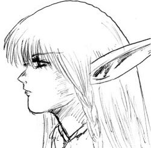

Joué par :
Astaethïen Joué par :
[ Information masquée ] Age : 300
Lieu de naisance : Inconnu
Signe de naissance : Loup
Sexe : Femme
Race : Elfe
Faction : Alliance
Formation : Guerrier
Guilde : Artisanat 1 : Herboriste
Artisanat 2 : Alchimiste
Informations hrp : Le silence est d'or, la parole est d'argent..
Description :
Elle était devenue Prêtresse afin de faire perdurer le lien de sa famille à Elune.
Elle est devenue Chasseresse afin que sa fille puisse être nourrie..
Elle suit aujourd'hui sa propre voie...celle des Protécteurs d'Elune..
Troisième Ère [8]
Lune de la Force
Décade du Panda
Décade du Gorille
Décade de l'Ours
Lune d'Agilité
Décade du Tigre
Décade du Singe
Décade du Faucon
Lune de l'Esprit [8]
Décade de la Chouette
Décade de la Baleine [1]
Cauchemar ou rêve
Lodeur de la Mort planait
Cette odeur de sang qui vous laisse toujours un goût amer sur la langue. Cette odeur de sang qui pourrait vous faire frissonner dans des moments de pures vaillance.
Elle planait goulument sur les herbes, sur les feuillages, au creux de lhumus qui navait de saveur que ce liquide vital.
Les étoiles éclairaient le ciel de leur lueur féerique, et les Terres Elfiques nétaient que grandeur. Comme dans ces contes enfantins.
Les étoiles éclairaient une clairière, entourée darbres qui hurlaient leur déception en laissant le vent brûler chacune de leur feuille.
Et un sanglot.
Un corps, allongé au sol, profitant de la douceur des herbes qui absorbaient déjà la rosée du matin.
Malédiction.
Le rayon de lune frappait ce qui semblait être des lames. Lames maculées dun liquide visqueux, aux couleurs du feu.
La chevelure lavande se répandait sur le sol, nombreuses tresses dans la finition. Les yeux étaient clos, les larmes perlaient.
« Pourquoi . »
Simple murmure qui sévaporait dans les airs, quelque chose de masculin dans la beauté dun aurore séveillant.
« Pourquoi »
Les sanglots ne cessaient plus, ils sintensifiaient. La douleur grimpait dans chacun de ses membres, la Kaldorei se mourrait.
« Non »
Cette voix. Encore présente, réalité ou vision ? Elle aurait aimé se laisser aller à la mort. Ses veines tranchées. La vitalité évaporée.
« Tu ne partiras pas »
« Elune » Murmura t-elle, perdue.
La lune était là, grandiose, assistant à ce spectacle désolant. Ses forces labandonnaient, et enfin, revenaient, comme ces lueurs frénétiques qui battaient leur plein autour de son corps immobile.
« Tu as juré de servir Elune Pas de la rejoindre.. »
Elle semblait sélever, pour sasseoir, ritournelle. Et cette voix masculine nen était pas une, une forme éthérée se forma au creux de son rêve éveillé. Un regard qui était de ceux quon avait limpression de connaître et en même temps doublier.
« Jai juré »
Et un appel, pur, une voix quelle connaissait, cette voix lappelait.
« Maman »
Elle aurait voulu répondre, mais elle semblait paralysée par ce quelle voyait, cette forme qui ne cessait de danser devant son regard dor en fusion. Elle essaya de tendre la main, mais le vide laccueillit. Elle tombait, encore et encore, sans pouvoir se rattraper.
« Maman Réveille toi.. »
Ces sanglots enfantins. Cette couleur sombre qui lentourait, elle voulait se défaire des liens que forgeait la forme éthérée. Et elle osa crier. Un cri sans fin, un cri de libération.
Des petits bras lentouraient, lodeur fraîche du pin la fit soupirer. Ses membres répondaient à ses désirs, elle serra lenfant contre son sein, pleine de sueur, encore ce Rêve.. ou Cauchemar.
« Calme toi ma puce, je suis là » Des mots pour calmer le cur inquiet de lenfant, de la petite Kaldorei aux cheveux aigues marine. Les larmes coulaient sur son épaule, sa fille pleurait, sanglotait.
Elle ne pu que la serrer encore plus, la faire sentir quelle était revenue, quil ny avait plus rien à craindre, que sa mère était près delle. Le lien qui les unissait était aussi fort quil pouvait être. Ce silence de la nature les suivait dans leur étreinte. Le soleil se levait, comme dans son rêve. Mais la forme éthérée nétait plus, imaginaire sous doute
Décade du Lapin [7]
L'orientation forcée
Quelque part en Teldrassil, dans une grotte désertée par les animaux, dans un lieu humide mais où les peaux de bêtes auréolaient les murs, vivaient une mère et son enfant.
Assise dans un coin de cet habitation lugubre, la Kaldorei affinait ses flêches, la longue chevelure lavande portait encore quelques feuillages et autres petits branchages, amassés sur le chemin. Elle était sauvage certes, mais mère avant tout. Car, devant ses yeux, une petite elfe nettoyait le doux pelage d'un sabre de nuit.
Celui-ci, assis, ronronnait de plus belle.
" Maman, pourquoi on vit pas avec les autres dans la grande ville ?"
La Kaldorei leva un regard d'or en fusion sur son enfant, un soupçon de crainte balayant son regard.
" Les villes sont dangereuses, la nature et Elune sont nos mères, c'est en leur sein qu'il faut vivre, pas dans un endroit comme Darnassus..."
L'enfant fronça les sourcils et la mère se leva d'un mouvement si souple et si silencieux qu'on aurait parlé d'une ombre avant tout.
" Je vais m'occuper du repas de ce soir. Reste ici, prie Elune, ne sort pas...SombreCroc, tu viens avec moi. "
Le familier s'étira sur toute la longueur, son pellage sombre faisait ressortir les muscles qui roulaient sous sa peau, tandis que la Kaldorei posa un baiser sur le front de sa fille qui hochait rapidement la tête.
La Chasseresse et son familier sortirent de la grotte en silence, elle poussa des longs branchages de saûl, branchages qui cachaient leur habitation avant de jetter un regard aux alentours.
Ses pas étaient sûrs, elle était le silence personifier dans un long manteau de feuillages qui la cachaient des regards inopinés. Pas de monde sur les routes, le soleil allait se coucher, elle devait faire vite.
La Chasseresse et le Familier passèrent rapidement entre les arbres, l'arc dans la main, dont les runes le décorant, bougeaient au rythme de la lumière filtrant les feuillages.
Un sentier de terre montait sur leur gauche, il ne fallut que quelques secondes pour que la Kaldorei ne le prenne. La montagne n'était pas un élément qu'elle aimait, mais elle espérait secrêtement trouver un nid abandonné.
Quelques minutes de marche et la Kaldorei posa une main sur le crâne de SombreCroc tout en laissant son genoux touché le sol.
Elle tendit un index en direction d'un petit creux, là où se trouvaient plusieurs yeux. Sa main glissa en plusieurs directions en faisaient plusieurs signes rapides, le Familier s'avança alors, le ventre caressant le sol caillouteux, et les muscles des épaules largement visibles.
Bientôt, la Kaldorei ne vit plus son compagnon, elle décrocha une flêche à son carquois pour l'encocher. Ses pas furent toujours aussi souples, elle s'avança vers le nid, l'oreille aux aguets.
A quelques mètres, elle leva les yeux au ciel, prudente. Elle pensa soudainement, qu'elle n'avait pas eut le choix, elle avait été obligée de devenir chasseresse, pour que sa fille ne meurt pas de faim...elle soupira.
A quelques centimètres du nid, elle lâcha d'une main son arc pour tendre sa main libre vers les oeufs. Elle en attrapa un qu'elle glissa dans sa giberne. Enfin, elle en attrapa un deuxième...
Un hurlement la surprit soudain, suivit d'un grognement féroce, elle se retourna mais trop tard. Les serres acérées la firent basculer de l'arrière et lâcher son arc.
Des griffes suivis d'une forme sombre passèrent au dessus d'elle tout en faisant sortir un long cri de douleur à l'oiseau mécontent. SombreCroc était sorti de sa cache et avait ouvert une logue entaille dans le ventre de l'attaquant, avant de se poser derrière sa maitresse allongée au sol.
SombreCroc montrait des dents, grognait au plus fort possible, son regard d'or semblait montrer sa haine. L'animal ne semblait pourtant pas éffrayé et il piqua net en direction de la Kaldorei.
Celle-ci fit une roulade de côté, écrasant un oeuf dans sa giberne. L'oiseau avait refermé ses serres sur le sol, juste assez pour que SombreCroc lance une attaque de la patte, les griffes aiguisées entrées dans la tête de l'oiseau qui battait des ailes.
Les crocs du familier finissèrent le travail, il secouait l'oiseau en tout sens, l'étourdissant en frappant le corps de son goûter au sol, et le silence revint...
Un sourcil lavande levé, la Kaldorei esquissa un sourire en récupérant les quatre autres oeufs du nid. C'est rapidement, qu'elle redescendit dans la forêt. Lançant une main à SombreCroc, qui finalement, prit une direction différente, son diner entre les machoires.
La Kaldorei retourna dans son chez-elle, là où sa fille l'attendait...là où elle aurait encore beaucoup de questions à essuyer, et là où elle devra donner plus d'une réponse...
Vision
De nouveau cette voix, cette chose qui ne cessait de murmurer au fond de ses entrailles.
Perdue au milieu d'un océan de noirceur, la Kaldorei retenait son visage et sa tête en espérant de pas les perdre. Ses yeux exorbités ne voyaient que les ravages de la guerre, la mort d'hommes et de femmes.
Les cris qui se faisaient plus forts ne la rendaient que plus tremblantes. Elle se sentait nue, malgrès la robe de lin blanc qui la recouvrait. Où a t-elle trouvé tel habit..? Elle aurait aimé se poser cette question.
Le temps défilait devant son regard amplie de folie, la douleur des autres, elle la ressentait, la tristesse des autres reposait sur ses frèles épaules. Elle aurait aimé voir le visage de sa fille...rien qu'une fois.
La sueur perlait sur son front, s'éparpillait dans sa chevelure lavande, elle se l'arrachait. Comment vivre, comment respirer alors que tout ce que vous aimiez disparaissait dans un grans coup de vent brusque.
La Kaldorei se pleurait au milieu de ce tourbillon d'âmes qui la hantaient.
A genoux, autour, le sombre et la mort. La même chose, seule chose qui arrivait à la suivre dans les méandres de ses rêves.
Et cette voix, androgyne, féminine ? Tambourinant dans son crâne...
" Sert Elune..."
Elle ne pouvait l'écouter, elle n'entendait que les gémissements et murmures des défunts...une plaine de méandres démoniaques dont l'odeur de souffe lui brûlait les narines.
" Tu as juré de servir Elune.."
" Je le sais ! celà fait 10 ans que vous me dites la même chose ! Je sers Elune ! "
Le silence fut plus douloureux que les murmures. Elle savait qu'elle était entrain de rêver, elle le savait, mais elle n'arrivait pas à se réveiller.
" Nous n'avons pas donné notre accord..."
" Celà fait des années que ça s'est passé ! Pourquoi me torturez vous de la sorte ! Tout le monde sait que vous n'avez pas donné votre accord ! "
" Es-tu certaine...?"
" Je n'ai jamais été aussi sûre de moi...je vous en pris...laissez moi en paix..."
" Ils reviennent..."
" De qui parlez vous ? "
Et une fois de plus le silence, et un regard, celui de tout le monde et de personne à la fois, se posa sur elle. La femme était éthérée, les yeux se refermaient...et la vision s'en alla...loin...glissant sur les ailes du temps pour ne plus jamais s'arrêter..
...et la Kaldorei s'était éveillée..
Séparation douloureuse
Les rêves étaient comme des papillons. Mais une fois entré dans son sein, le papillon suintait de sang.
Ces éternelles visions qui faisaient d'elle une martyre loin de toute civilisation, elle devenait aussi bestiale que les druides se laissant aller à la voie de la bête.
Sous le soleil éclatant d'un dernier mot, la Kaldoreï posa son regard d'or en fusion sur l'enfant qui se tenait devant elle, sa fille.
" Il est temps mon enfant..."
Les petits yeux lumineux de la jeune kaldoreï se firent incompris, elle pencha la tête de côte, interrogation.
" Suis moi.."
Elle avait délaissé son familier pour que celui-ci puisse aller se nourrir et elle commença à marcher dans les frondaisons d'une forêt de plus en plus sombre, les temps changeaient, elle en avait la certitude.
Bientôt, la mère et l'enfant se retrouvèrent sur un sentier de terre entouré d'arbres immenses dont les âges ne se comptaient plus. La mère était silencieuse, alors l'enfant ne posait pas de questions.
La marche ne fut pas longue avant que les deux êtres n'arrivent aux portes de Darnassus.
" Maman...je croyais que.."
" Suis moi.."
La tête baissée, elle refusait de laisser sortir la douleur de ce qu'elle comptait faire. Mais il était temps, pour elle comme pour sa fille, la séparation était arriv ce jour, ce jour où elle su qu'il fallait à tout prix changer les choses.
Elles traversèrent la Terasse des guerriers, le long manteau déchiré de la Kaldoreï glissant au sol alors que les gardes de Darnassus leur jettaient des regards curieux.
Elle continuèrent tout droit avant de bifurquer sur la gauche, la Kaldoreï tendit la main de l'avant.
" Le temple d'Elune...vient..ne soyons pas en retard. "
L'enfant essaya d'attraper la main de sa mère, sans succés, elle retenait ses larmes, elle commençait à comprendre.
L'entrée du temple...magnifique, les deux Kaldoreï étaient ébahies par la beautée et la magie des lieux. Une prêtresse vint à leur rencontre.
" Astaethien... Je ne pensais pas te revoir...comment vas-tu..?"
" Ca peut aller...je te présente ma fille...Alhéan. Alhéan voici une amie."
La Prêtresse ne cacha pas sa surprise, mais esquissa un curieux sourire en direction de l'enfant.
" Je peux te parler en privé..? Demanda la Chasseresse."
" Oui...Alhéan ? Tu peux aller dans la pièce là-bas avec les jeune prêtresses ?"
L'enfant hocha rapidement la tête avant d'aller dans la diretion indiqué, visiblement à contre coeur.
Les deux anciennes amies retrouvées commencèrent à marcher vers l'extérieur du temple.
" Je savais qu'Elune te ferais revenir parmi nous...tu sais...on a gardé ta robe..."
Un soupire qui s'échappa des lèvres de l'elfe avant qu'elle ne murmure.
" C'est du passé, ne revenons pas là-dessus je te pris.. Tu as entendu les murmures..? "
" Oui...je le crains.. les combats ne cesseront jamais..tu le sais..et une fois qu'un mal est détruit, un autre s'élève. Elune en est témoin.."
" Je crains pour la vie de ma fille, j'aimerais qu'elle reste au Temple afin d'appendre les préceptes que j'ai oublié. "
La Prêtresse haussa ses deux sourcils d'albâtre. Coite.
" Comprend moi, Darnassus est protégée."
" Tu n'as pas entendu parlé de l'attaque ? "
" Quelle attaque ?"
" La Horde a attaqué Darnassus..."
Le silence était aussi pesant que le soleil qui leur brûlait la peau.
" Ce n'est pas de la Horde que j'ai peur.. Garde là avec toi.. Apprend lui ce que tu sais.. j'ai beaucoup de choses à faire.."
" Tu l'entend toujours..?"
" Qu'importe..;Elune m'en soit témoin, je ne l'ai pas abandonné, je la sers toujours. "
La Prêtresse hocha la tête avant de venir serrer la Chasseresse dans ses bras.
" Qu'Elune te garde.."
" Qu'Elune nous protège tous. "
Et ainsi, elles se séparèrent, la mère laissant l'enfant sans au revoir, partie pour un ailleurs et des visions qui la tueront..sans aucun doute.
Vers le lointain
Le manteau voguait aux grès d'un vent marin.
Les yeux observaient le lointain.
Ses bras s'étaient refermés sur son corps, elle soupirait intérieurement. Elle avait froid, dans son coeur.
Elle attendait. Son voyage allait peut-être commencé. La voix le lui avait dit. Il était temps.
Ses bottes de cuir usé frappaient le bois du pont tandis qu'elle s'avançait vers le bateau. Un souffle. Une douleur. Elle fit un pas en arrière en secouant la tête.
Les regards des autres. Elle en avait perdu l'habitude, triste révélation. Ses vêtements n'étaient pas aussi beaux que ceux des voyageurs. Elle semblait usée de l'intérieur comme de l'extérieur.
Mais le courage est quelque chose qui ne l'abandonnerait jamais. Elle s'avança sur le bateau. Semblant se recroqueviller sur elle même pour éviter le regard désabusé des autres voyageurs.
Des humains et des elfes. Une population qu'elle avait depuis longtemps oublié. C'était à peine si elle comprenait les mots qu'ils s'échangeaient entre eux.
Elle se dirigea de suite vers une cabine, épuisée moralement.
Le voyage allait être long, très long, et elle allait pouvoir dormir.
Espérant que ce sommeil ne sera pas jonché de cendres et de morts, de douleurs et de cris, de cette voix qui ne faisait que l'appeler.
Elle s'allongea sur une couche, attrapant un sac de coton pour le poser sous sa tête. Son manteau sâli posé au sol, elle sombra dans un sommeil sans rêves...pour une fois...à son arrivé, elle se sentirai plus libérée.
La nuit était tombée comme de ces manteaux qui se répendaient amérement sur la lumière. Une ombre se faufilait entre les ruelles.
Stormwind. Cité grandiose. Cité humaine. Rires dans les auberges. Passants silencieux.
Elle était venue ici pour une seule raison. Long manteau sâle troqué pour un manteau sombre dans la capuche cachait à peine le regard de fusion qui observait les alentours.
Il était impossible de remarqué cet être, blotti, attendant en silence la personne qui aurait pu l'aider.
Des bruits de pas sur sa gauche, elle tourna son regard. Un être s'approchait. Un Kaldoreï, il ne se cachait pas.
Leurs regards se croisèrent, un frisson remonta le long de leur échine. Un silence.
La Chasseresse fit un signe de la main, l'elfe s'approcha un peu plus. Imberbe, la chevelure blanche coupée court, et une longue toge blanche, celà voulait dire beaucoup de choses.
" J'ai eut ton message... Je te croyais morte. "
" J'aurais préféré vois-tu. Je ne te demande pas si tu vas bien, vu ta tête de détéré, tu n'as pas dormi depuis plusieurs jours. "
L'elfe esquissa un vague sourire.
" Tu n'as pas changé...et toi...tu sens la béstialité, que t'es t-il arrivé ?"
" Qu'importe, je ne suis pas venue ici pour parler de ma vie. Les murmures commencent. "
Un soupire, et l'elfe s'appuya au bâtiment à côté de sa compatriote.
" Je m'éloigne Astaethïen, je m'éloigne peu à peu du Rêve..."
" Tu ne tends pas la main, ni ton coeur, tu n'as jamais su le faire. J'ai besoin d'un abri pour quelques temps. "
" Bien sûr, je peux m'en charger... Mais je ne sais toujours pas pourquoi tu resurgis soudainement.."
" Les Rêves me parlent...Elle me parle. "
" Elune ? " L'elfe semblait totalement coit.
" Non.."
Il fronça les sourcils tandis que la Kaldoreï enlevait son manteau.
" Et pour ton... D'accord...j'ai compris.. tu me contacteras..."
Et le Kaldoreï resta seul, observant les lueurs des étoiles en soupirant.
" Pourquoi es-tu revenue..."
Reflexions
Le vent était tendre ce matin là. Assez tendre pour que la Kaldoreï refuse l'idée même de quitter ce pont, sur lequel elle était assise depuis des heures.
Ses jambes battaient dans le vide, et l'eau en dessous d'elle miroitait déjà des lueurs chancelantes et chaleureuses d'un aurore bienveillant.
Le soupire qu'elle laissa échapper était à la hauteur de son regard perdu qui observait ce qu'elle tenait en sa main. Un médaillon...
Elle l'avait trouvé entre deux touffes d'arbre quand elle était enfant. Et elle ne s'en était jamais séparé...elle ne savait toujours pas pourquoi d'ailleurs.
Elle serra fortement le médaillon en sa main avant de laisser son dos tomber contre la pierre.
" Qu'importe après tout... D'aucuns disent qu'Elle manipule l'esprit...Elle ne manipule pas le mien..."
Suis ta voie
Et les cauchemars se poursuivaient, comme si elle ne pouvait plus contrôler ce qu'elle devait faire ou pas. Sa vie n'avait été que remous, réveil en sursaut, larmes sans fin, sang aveuglant. Et encore aujourd'hui, elle ne contrôlait rien...
La voix qui l'avait suivit durant des années et des années, s'était adoucie, comme celle d'une mère qui ne voulait que le bonheur de son enfant.
La Kaldoreï avant attendu celà. Elle avait attendu ce moment propice à un message qui aurait pu lui changer la vie.
La douleur de la perte de sa fille ne la rendait que plus instable, perdue, et fragile. Son esprit s'ouvrait plus grandement à Celle qui ne devait chercher que son bien.
C'aurait été un désastre si son peuple savait ce qu'il se passait au delà du Rêve. Mais elle ne s'en souciait que peu. Sa Guide lui avait ouvert les yeux.
" Tu étais Prêtresse dans les premières années de ta vie d'adolescente... qu'à tu apris de celà..?"
" J'ai voulu faire plaisir à ma mère..."
" Tu étais Chasseresse...qu'a tu apris de celà ?"
" J'ai voulu faire vivre ma fille..."
" Quand te décideras tu à vivre ta vie ?"
" Je ne sais..."
" Ouvre les yeux Kaldoreï...protége ta patrie...ta fillle pour qu'elle puisse vivre, protége tes parents pour qu'ils puissent aimer ce qu'ils ont accompli. Protége Elune pour la vie qu'elle t'a donné.."
" Comment..?"
" Va a Teldrassil, ta question aura sa réponse..."
Simple Rêve, où enfin, elle pu avoir cette conversation tant attendu. Et c'est ainsi, que la Kaldoreï prit le large pour Teldrassil et sa véritable voie, Protéctrice d'Elune.
( Hrp : Et enfin, je vais créer mon personnage, tout les textes qui sont écris là étaient un préambule à la création de mon personnage. )